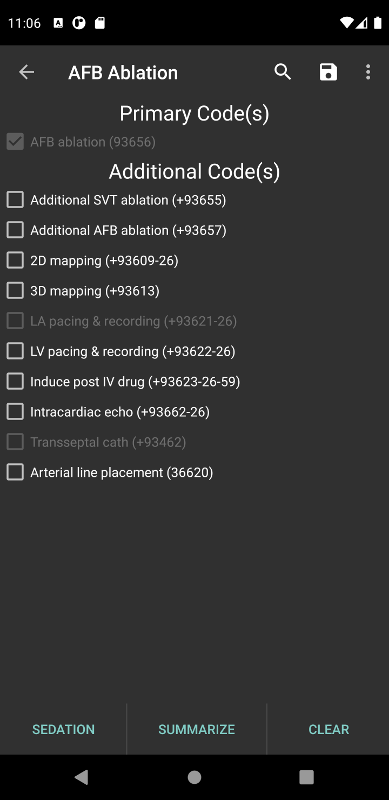
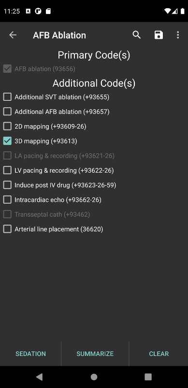
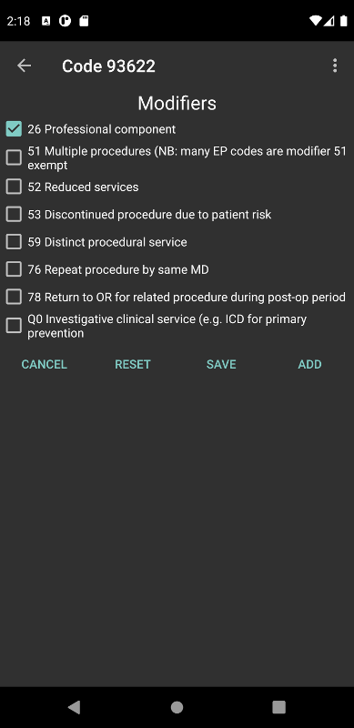
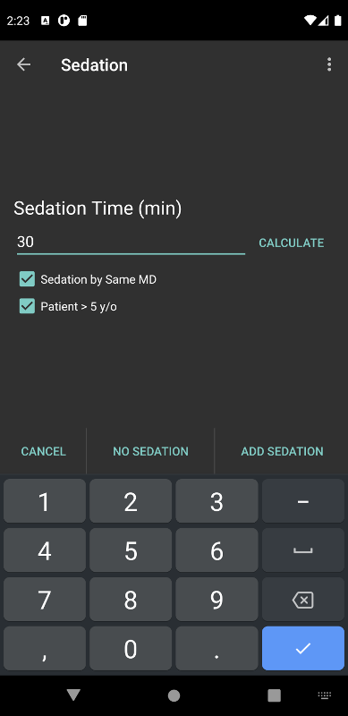
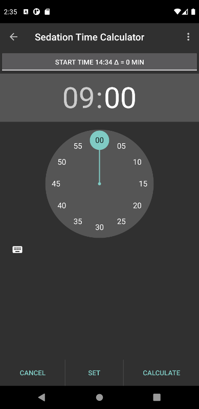
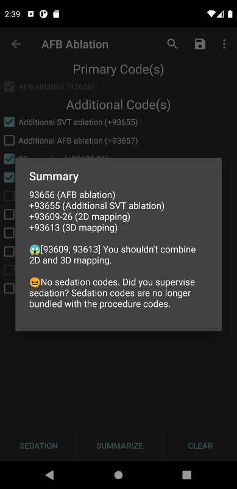
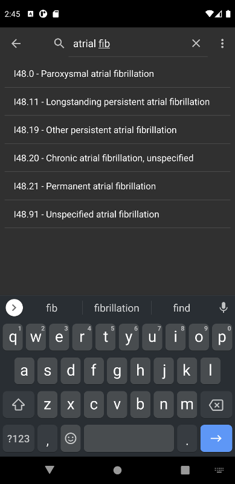
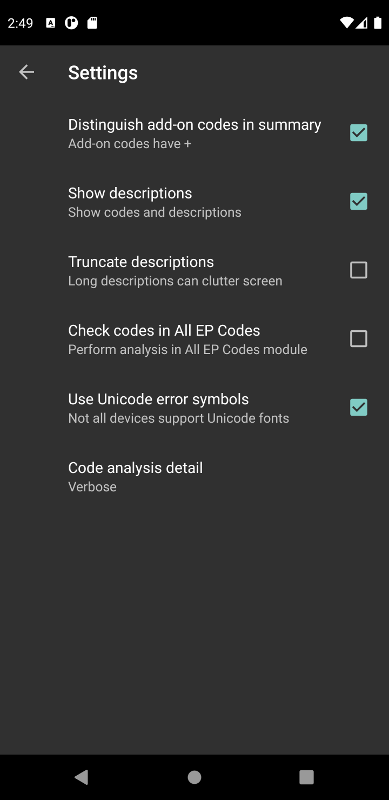

Table of Contents
EP Coding Help
EP Coding 101
Don't want to read the manual? Here's the TL;DR:
- Choose a procedure.
- Select codes from the list of codes presented.
- Tap the Sedation button to calculate sedation coding for the procedure.
- Tap Summarize to see a summary of selected codes along with warnings or errors in coding.
- Select ICD-10 diagnostic codes.
But there's a lot more to EP Coding. Read on if you dare…
Why EP Coding?
Current Procedural Terminology a.k.a. CPT® coding is not for the faint of heart. This is especially true for electrophysiologists, whose procedures can be as difficult to code as they are to perform (well, almost).
CPT coding is arcane. Unlike other medical coding systems, it is a proprietary system, copyrighted and owned by the American Medical Association (AMA). It is a secretive system unless you are willing to shell out large quantities of money to buy the official AMA coding book or attend a CPT coding seminar. To make matters worse, the AMA tweaks the system on a yearly basis, so that to keep up it is necessary to buy their book or attend a seminar yearly. But this is overkill for the average physician, who basically just wants to know how to code for procedures he or she commonly performs and enter these codes in the Electronic Health Record.
There is a strong temptation to throw up one's hands in despair and just let the professional coders code procedures based on whatever is documented in the procedure report. But wait! You can do this! You have EP Coding on your mobile device. It only cost you 99¢ and future updates are free. And it is tailored to you, the practicing electrophysiologist.
Who should use EP Coding?
Physicians who perform cardiac electrophysiology (EP) procedures and are required to submit CPT codes for these procedures. EP Coding is intended to help EP physicians enter the correct codes in an EHR (Electronic Health Record). It is not intended for professional coders nor is it a substitute for the AMA official CPT documentation.
How does EP Coding help?
- List relevant CPT codes for EP procedures, with succinct descriptions.
- Determine which codes can and cannot be combined for specific procedures.
- Analyze selected codes for errors and warnings.
- Add code modifiers as needed.
- Calculate sedation codes for procedures.
- Read help on how to code procedures.
How to use EP Coding
Select a procedure

Figure 1: Procedure list
On an Android phone, the initial screen when the app starts shows a list of common EP procedures. On an Android tablet, the list of procedures appears at the side of the screen. The procedure list covers most common EP procedures. If a procedure is not listed, you have several options. You can use the Device Wizard to code complicated device procedures. You can Search for specific codes. You can also use the All EP Codes option of the procedure list, which contains all EP-related codes in numeric order.
Procedure codes
- Types of codes
Each procedure has a list of codes

Figure 2: Atrial fibrillation ablation codes.
Codes are organized as primary codes, at least one of which needs to be selected, and additional codes which are commonly used with the primary procedure codes. There is a checkbox to the left of each code to indicate which codes are selected. Codes that must be selected for a particular procedure are automatically selected (indicated by a checkmark) and cannot be unselected (indicated by a lighter gray text color). Prohibited codes that cannot be selected because they are bundled with the primary code(s) are also shown in a lighter gray text color, indicating these codes are disabled.
- Selecting codes

Figure 3: Selecting a code. The 3D mapping code has been selected.
Select a code by tapping it. Unselect the code by tapping it again. Hitting the back button and going back to the main procedure list will unselect any selected codes (though selected codes can be saved – see saving codes.
- Clear selected codes
Tap Clear to clear the selected codes.
- Code modifiers
The CPT coding system includes hundreds of code modifiers that can or must be added to codes, depending on circumstances. It is beyond the scope of this help text to explain the intricacies of modifiers. EP Coding includes the most common modifiers, and by default these modifiers are applied to codes when appropriate. Modifiers can be added or edited for each code, saved to become new defaults, or reset to the original program defaults. Saving modifiers is especially useful if your expert coders suggest using other modifiers than the program's defaults, or if the AMA decides to change which modifiers are appropriate. For example, some codes contain both a physician and facility component, while others contain only a physician component. The former type of code needs to have modifier 26 attached, whereas the latter doesn't.

Figure 4: Modifier screen with Modifier 26 selected.
Long press on a code (for a second or two) to bring up a list of common code modifiers that can be added or removed from each code. Select or unselect a modifier by tapping on it. Tap the Add button to add the modifier (or subtract it) from the code and return to the code list. Tap the Save button to make this modifier a default so that it is attached to the code all the time. Tap Reset to reset saved modifiers back to their default values. Note that pre-selected primary codes and prohibited codes can't be modified in the specific procedure modules. However any code can be modified using the All Codes module.
- Sedation coding
As of 2017, the AMA, in their never ending quest to make life complicated for physicians, decided to unbundle sedation coding from procedures codes. Six new sedation codes were added, dependent on the age of the patient and whether the physician performing the procedure was also performing (i.e. supervising) the administration of moderate sedation. Codes are separated between codes for the initial 15 minutes of sedation, and subsequent 15 minute intervals. The latter codes can be applied multiple times, depending on the duration of sedation. To complicate matters further, there are rules for rounding time periods, so that, for example, the initial 15 minutes of sedation code can only be applied for time periods between 10 and 22 minutes. If you administer 9 minutes of sedation, no sedation codes can be submitted. Also note that sedation time does not equal procedure time. It must be tracked and documented separately.
Given all this, EP Coding now has a sedation calculator

Figure 5: Sedation coding calculator
From the procedure code list screen (see figure) tap Sedation at the bottom of the screen to add sedation codes. When you tap the button a menu appears offering to Add sedation codes. (Note that after adding sedation codes, this button appears as Edit). Selecting Add then brings up a screen similar to the one above. Enter the sedation time (not procedure time), rounded down to the nearest minute. Select whether the same MD (i.e. you) performed the procedure and administered sedation (administering doesn't mean you did it personally, just that you were the one supervising whoever gave the sedation). If another physician, e.g. an anesthesiologist, administered the sedation, the calculator will determine the proper coding, but that other MD is the one who must submit the codes. The other factor that you must choose is the age of the patient: greater or less than 5 years old.
To assist with determining the sedation time, tap Calculate to the right of the sedation time label. The next screen will appear.

Figure 6: Sedation time calculator
Set the time selector (which is a 24 hour clock) to the start of sedation time, then tap Set. Tap the button on the top of the screen to change to End Time. Set the end time on the time selector and then tap the Set button again. Tap Calculate to transfer the calculated time in minutes to the Sedation time text entry field. Note that if the end time is earlier than the start time, the calculator assumes that the procedure went past midnight (too bad!), and calculates accordingly.
Tap Add Sedation to add the sedation codes to the procedure. A dialog box will appear summarizing the sedation coding. Tap No Sedation if you did not use sedation during the procedure. Tap Cancel or the back button if you don't want to add sedation coding at this time. When you return to the procedure detail screen, the sedation codes won't appear on the list of codes, but they will appear when you tap Summarize to get a Code Summary as described below. Sedation coding using the Device Wizard is handled a little differently than this, and is described further below.
- Saving codes
Tap Save from the top right menu to save your selection of additional codes as a default. If you nearly always select the same additional codes (e.g. always do 3D mapping with SVT ablation), save the codes and they will preselected when you use the app again. Note that primary code selections are not saved.
- All EP codes module
The All EP Codes module lists every EP procedure code in numerical order, with code number given first. It is the a la carte menu of EP Coding.
Code Summary

Figure 7: Code summary
Tap Summarize to show a summary of the codes selected along with any comments, warnings or errors. EP Coding looks for codes that don't belong together, add-on codes without primary codes, lack of sedation coding, and other possibly erroneous coding situations. Note that not all incorrect combinations of codes can be detected. When in doubt, consult with your professional coders.
Searching, Device wizard, 1CD-10 codes
Tap the menu icon on the upper right of the screen for more options.
- Search CPT codes
Tap Search to search for CPT codes by name or number. Note that due to the abbreviations used, a search that you expect to have results may come up empty. For example to search for pacer/pacemaker codes, search for "PPM." Here is a list of abbreviations used in EP Coding.
- Device wizard
Tap Device Wizard to steer you through complex device upgrades and revisions. A list of steps and possible codes is shown. Swipe each coding page and select the codes you need on each page. Sedation is added along the way. After swiping through each page of the Wizard, the code summary will appear when you select Finish or swipe past the last page.
- ICD-10 codes
EP Coding includes a searchable list of ICD-10 codes. ICD-10 codes are provided by CMS.gov, and are updated on October 1 of each year. Previous versions of the app only included a subset of the codes relating to cardiology, but now we include all the diagnostic codes. The codes are the so-called ICD-10-CM codes, which are the diagnostic codes (the ICD-10-PCS procedure codes are not included, as these are more relevant to facility coding). Use the search bar to narrow down and find the right code. For example, here is a search for "atrial fib":

Figure 8: ICD-10 search for "atrial fib."
Note that all ICD-10 codes start with a letter not a number. Thus for example the code for Paroxysmal atrial fibrillation is I48.0, /not 148.0.
- Help
Well, you're reading this, so you must have figured out already that you select Help to get help.
General hints
- Set code analysis to verbose.
- Use the specific procedure modules rather than the All EP Codes module for coding procedures.
- Don't use the raw sedation codes in the All EP Codes module for sedation coding. Use the Sedation button instead.
- You may find it easier to use the Device Wizard to do device upgrade coding rather than the Upgrade/Revision/Extraction module.
- Use the All EP Codes module if you need to look up a specific code, as they are listed in numeric order in this module. Alternatively, use Search.
- There are some rare codes in the All EP Codes module that aren't present in the other modules.
- Don't try to add codes that are disabled in a procedure module.
- If you nearly always add codes to a procedure (e.g. 3D mapping with AFB ablation), then save it as a default using the Save icon.
- Warnings (indicated by ! or an emoticon, depending on the capabilities of your device, and Settings) point out codes that you may be missing or code combinations that possibly shouldn't be used together.
- Errors (indicated by !! or an emoticon) indicate code combinations that almost certainly are not allowed.
- Check with your coders or the AMA documentation if you are not sure how to code a procedure.
Specific procedures
AFB ablation
- Includes comprehensive EP testing, LA pacing and recording and transseptal puncture.
- Add 93657 if additional AFB ablation done beyond pulmonary vein isolation.
- Add 93655 if separate supraventricular arrhythmia mechanism ablated (e.g. focal atrial tachycardia).
SVT ablation
- Includes comprehensive EP testing.
- SVT ablation code is used for any kind of SVT ablation including WPW, focal atrial tachycardia, atrial flutter, and AV nodal reentry.
VT ablation
- Includes comprehensive EP testing, LV pacing and recording, and mapping codes.
- You can't add mapping codes 93609 or 93613 to VT ablation!
AV node ablation
- It is not clear if EP testing codes can be combined with AV node ablation.
- It is not clear if mapping codes can be combined with AV node ablation.
- These points may need to be clarified with your coders.
EP testing
- Use 93620 (EP testing with attempted arrhythmia induction).
- Don't code with ablation procedures (? exception AV node ablation).
- You can add mapping codes, but don't add ablation codes to EP testing.
- Make sure you have performed and documented all components for code 93620:
- insertion of multiple catheters
- right atrial pacing and recording
- right ventricular pacing and recording
- His bundle recording
- Induction or attempted induction of arrhythmia
- If there is no attempted induction of arrhythmia (e.g. arrhythmia is incessant and already present), use code 93619.
- If not all components can be performed (e.g. patient in atrial fibrillation so no atrial pacing), it may be necessary to use individual component codes rather than the comprehensive EP codes. These codes are found in the all Codes module and may be combined as needed:
- 93600 Bundle of His recording
- 93602 Intra-atrial recording
- 93603 Right ventricular recording
- 93610 Intra-atrial pacing
- 93612 Intraventricular pacing
- 93618 Induction of arrhythmia
- If left atrial pacing and recording is performed, add code +93621 to one of the primary EP study codes. If there is only left atrial recording but not pacing (e.g. patient in atrial fibrillation), or vice-versa, add modifier 52 (reduced services).
New PPM or ICD
- Use codes 33206 to 33208 for new PPM depending on number of leads.
- Use 33249 for new single or dual ICD.
- Add code 33225 to dual chamber device code for PPM or ICD with CRT.
- Add 93641 if you do DFT testing during the ICD implant.
- Placing a sub-cutaneous array is probably best coded with 33999 (unlisted surgical procedure code).
- Modifier Q0 must be used for primary prevention ICDs (the majority of implants in most cases). Modifier Q0 must be removed for other ICD indications (i.e. secondary prevention).
Replace PPM or ICD
- Use 33227 to 33229 for PPM replacement and 33262 to 33264 for ICD replacement depending on number of leads.
- Do not add generator removal codes to these codes!
- Add 93641 if you do DFT testing during ICD generator replacement.
- Remember to use Modifier Q0 if needed.
Upgrade/revision/extraction
- This is the most complicated coding area. We will break this down into some specific situations. You can also use the Device Wizard to lead you through this. This is the simplest way to do this!
- Note codes are arranged in logical groups, not necessarily in numeric order.
- Don't forget Modifier Q0!
- Lead addition only, no change in generator
- Use specific lead placement code, e.g. 33216, place A lead.
- Use 33224 to place an LV lead if the CRT generator is already there.
- Lead repositioning
- Reposition previously implanted single A or V lead: 33215
- Reposition previously implanted LV lead: 33226
- Removal of generator alone
- PPM generator removal: 33233
- ICD generator removal: 33241
- Don't use these codes in conjunction with generator-only replacement codes, but do use them with new/replacement system codes for upgrades (see Upgrade of system).
- Removal/extraction of leads
- PPM single lead extraction: 33234
- PPM dual lead extraction: 33235
- ICD 1 or 2 leads extracted: 33244
- LV lead extraction has no specific code, probably should use 33234 or 33999 (unlisted procedure).
- Removal of entire system without replacement
- Use combination of generator removal and lead removal codes as appropriate.
- New/replacement device
- PPM:
- 33206 new/replacement PPM with new A lead
- 33207 new/replacement PPM with new V lead
- 33208 new/replacement PPM with new A and V leads
- ICD: 33249 new ICD, single or dual, with leads
- Plus LV lead: +33225
- PPM:
- Upgrade of system
- Single chamber to dual chamber PPM (includes new lead, removal of old generator and placement of new generator) : 33214
- Other situations: code removal of generator and removal of leads if leads are removed, then code for insertion of new system.
- Example: upgrade of single chamber PPM to ICD with CRT.
- Code PPM generator removal: 33233
- Code single or dual ICD system implant: 33249
- Code implant LV lead with new system: +33225
- Place generator, existing leads
- Single chamber PPM generator: 33212
- Dual chamber PPM generator: 33213
- Single chamber ICD generator: 33240
- Dual chamber ICD generator: 33230
- CRT ICD generator: 33231
- Pocket revision
- PPM pocket revision: 33222
- ICD pocket revision: 33223
- Lead repair
- One lead repaired: 33218
- Two leads repaired: 33220
Other procedures
- These are miscellaneous EP procedures (tilt table, cardioversion, etc.)
- Fluoroscopy to check for lead integrity: 76000
All EP codes
- Lists all codes in the app in numeric order.
- Avoid using this module unless other ones don't cover coding because procedure is unusual or rarely done.
- Code analysis may not check every combination of codes selected in this module.
- This module can be useful to look up specific code numbers.
- Sedation codes are listed, but it is preferable as in the other modules to use the sedation calculator to compute sedation codes.
Settings

Figure 9: Setting screen
- Settings, except for the distinguish add-on codes setting, apply to the format of the summary screen and code analysis, not to the main code display screens.
- Distinguish add-on codes: Add + in front of add-on only codes, e.g. +99999.
- Show descriptions: Add description to code, otherwise shows only code.
- Truncate descriptions: Shortens descriptions to help fit on small screens.
- Check codes in All EP Codes: Turn on or off code analysis in the All EP Codes module.
- Use Unicode error symbols: On devices that have font support for Unicode symbols (should be most devices nowadays), use these symbols for marking errors.
- Code analysis detail
- Verbose: Full analysis with full descriptions of warnings and errors.
- Brief: Lists offending codes without only brief or no descriptions.
- None: No code analysis done.
Abbreviations
- A = atrial
- AFB = atrial fibrillation
- AFL = atrial flutter
- CRT = cardiac resynchronization therapy
- ICD = implantable cardioverter defibrillator
- PPM = permanent pacemaker
- LV = left ventricular
- MD = used generically for doctor, regardless of specific degree
- SubQ = subcutaneous
- SVT = supraventricular tachycardia
- V = ventricular
- VT = ventricular tachycardia
Limitations
- Only EP procedure CPT codes are included.
- No surgical EP codes (e.g. LV lead via thoracotomy).
- Some rare or obsolete codes are not included.
- Code descriptions are paraphrased.
- Code components are not given or are incomplete.
- No office based or in-patient billing codes.
- No device programming codes.
- Only limited, common code modifiers are presented.
- Code analysis marks common errors, but is no substitute for a professional coder!
- ICD-10-PCS are not included, as these are generally not used by physicians.
Acknowledgments
- CPT copyright 2014 American Medical Association. All rights reserved. CPT is a registered trademark of the American Medical Association.
- A limited number of CPT codes are used in this app, under the fair use doctrine of the US Copyright Act. For a discussion of the rationale see here.
- ICD-10-CM codes were downloaded from CMS.gov. These codes are a modification by the US government of the World Health Organization ICD-10 codes, and are freely available for download. There appears to be no specific licensing requirement for this code set.
- The source code for EP Coding is available on GitHub here.
- EP Coding source code is open source and is licensed under the GNU General Public License version 3.
- For questions, error reporting or suggestions contact EP Studios.
- Website: www.epstudiossoftware.com